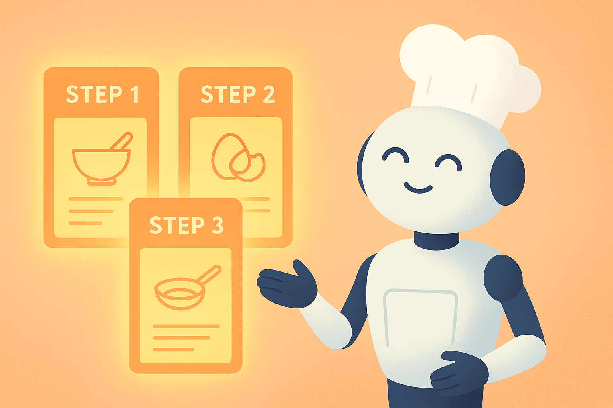

7 Komplexe Aufgaben in Mini-Schritte zerlegen: Chain Prompting
Stell dir vor, du hast eine Aufgabe vor dir, die sich anfühlt wie ein einziger, riesiger Berg. Ein Referat, das morgen fertig sein muss. Ein schwieriger Text, den du einfach nicht verstehst. Ein Essay, bei dem du gar nicht weißt, wie du anfangen sollst. Oder ein Coding-Projekt, das du zwar cool findest, aber das dir momentan wie eine komplett fremde Sprache vorkommt.
In solchen Situationen passiert meistens zweierlei:
- Dein Gehirn schaltet in Stressmodus.
- Eine KI schaltet in „Überforderungsmodus“.
Beides ist normal – und beides lässt sich lösen. Genau hier kommt eine der mächtigsten Prompt-Strategien ins Spiel, die du überhaupt lernen kannst:
Chain Prompting – das Zerlegen einer komplexen Aufgabe in einfache, logisch aufeinander aufbauende Mini-Schritte.
Du wirst in diesem Kapitel lernen:
👉 warum KI manchmal nicht gut mit „großen“ Fragen umgehen kann,
👉 wie du deinen Denkprozess aufteilst – und die KI mit dir gemeinsam, Schritt für Schritt, durch eine Aufgabe führst,
👉 wie sich dadurch Ergebnisse verbessern, klarer werden und viel leichter kontrollierbar sind,
👉 und wie du Chain Prompting ganz praktisch für Schule, Lernen, Recherche, Social Media und Coding einsetzen kannst. 7.1 Wann KI überfordert ist – und warum das nichts mit „Intelligenz“ zu tun hat
Viele Menschen glauben, KI sei „superintelligent“ und könne alles sofort. Und klar, manchmal wirkt es so. Aber große Sprachmodelle arbeiten auf eine bestimmte Art, die man verstehen muss:
Sie generieren Wörter – nicht Pläne. Sie reagieren auf deinen Prompt – nicht auf dein langfristiges Ziel. Sie raten Wahrscheinlichkeiten – sie analysieren keine Gesamtstrategien.
Wenn du also fragst:
„Fasse das Kapitel zusammen, erkläre die Fachbegriffe, erstelle eine Tabelle, mache ein Quiz und gib mir Verbesserungstipps für meinen Essay.“
…dann passiert Folgendes:
- Die KI sieht einen riesigen Aufgabenblock.
- Sie versucht alles gleichzeitig zu lösen.
- Sie erzeugt oft etwas… Durchschnittliches.
- Sie trifft Entscheidungen, die du nicht kontrollieren kannst.
Das ist wie wenn jemand sagt:
„Koch mir bitte ein Drei-Gänge-Menü, lerne für Mathe, mach meine Präsentation schöner, erklär mir Quantenphysik und sag mir, welche Jacke ich morgen anziehen soll.“
Das ist einfach zu viel auf einmal.
👉 Warum große Aufgaben die KI verwirren:
- Die KI erkennt nicht automatisch, welche Schritte nötig sind.
- Sie weiß nicht, welche Informationen Priorität haben.
- Sie kann nicht einschätzen, in welcher Reihenfolge du arbeiten willst.
- Sie versucht, eine Gesamtantwort zu generieren – ohne Plan.
Und jetzt kommt das Interessante:
Menschen machen denselben Fehler.
Wir haben die Tendenz, große Fragen groß zu stellen. Dabei funktionieren menschliches Denken und KI-Denken viel besser, wenn wir in Schritten arbeiten.
7.2 Die Lösung: Aufgaben in kleine Schritte zerlegen
Chain Prompting ist wie ein Rezept – nur für deine Gedanken.
Statt der KI alles auf einmal umzuhängen, machst du Folgendes:
- Definiere das Ziel.
- Zerlege die Aufgabe in Schritte.
- Lass die KI jeden Schritt einzeln ausführen.
- Überprüfe nach jedem Schritt das Ergebnis.
- Entscheide, wie es weitergeht.
Im Grunde sagst du:
„Lass uns gemeinsam denken. Schritt für Schritt.“
Damit passiert etwas Beeindruckendes:
- Die KI wird logischer.
- Die Antworten werden klarer.
- Fehler reduzieren sich massiv.
- Du behältst die Kontrolle.
- Jede Aufgabe fühlt sich viel leichter an.
👉 Beispiel (schlechte Anfrage):
„Erstell mir ein Referat über den Klimawandel.“
👉 Beispiel (Chain Prompting Variante):
- „Schritt 1: Erstelle eine klare Gliederung für ein 5-minütiges Referat über den Klimawandel.“
- „Schritt 2: Schreibe für jeden Gliederungspunkt einen Absatz.“
- „Schritt 3: Fasse die wichtigsten Zahlen und Fakten in Stichpunkten zusammen.“
- „Schritt 4: Erstelle eine einfache Folienvorlage für eine Präsentation.“
Das Ergebnis ist zehnmal besser – weil du führst.
Chain Prompting macht dich zum Dirigenten, nicht zum Zuschauer.
7.3 Die Story: Der KI-Chefkoch, der Rezepte in Schritte aufteilt
Stell dir vor, du möchtest „Lasagne“ kochen. Wenn du jemanden fragst:
„Mach mir Lasagne! Jetzt!“
…wird es schwierig. Aber wenn du sagst:
- „Was sind die einzelnen Schritte, um Lasagne zu kochen?“
- „Erkläre mir Schritt 1.“
- „Okay, zeig mir Schritt 2.“
- „Gut, Schritt 3 bitte.“
…dann wird plötzlich alles machbar.
Diese Story funktioniert perfekt für KI – und viele Schülerinnen und Schüler haben damit enorme Erfolge.
👉 Die Situation:
Lina, 15, muss ein Projekt in Bio abgeben. Ihr Thema: „Das Immunsystem des Menschen“. Sie hat null Plan, wie sie anfangen soll.
Also schreibt sie:
„Erstell mir ein komplettes Bio-Projekt zum Immunsystem.“
Die KI liefert einen langen Text, wenige Strukturpunkte, etwas zu wissenschaftlich – und es passt nicht zum Aufgabenblatt. Lina ist frustriert.
Doch dann probiert sie Chain Prompting:
👉 Schritt 1 – Ziel definieren
„Bevor du beginnst: Ich brauche ein Bio-Projekt (9. Klasse), 3–4 Seiten, klar erklärt, mit Beispielen und kleiner Grafik. Kannst du zuerst eine Gliederung vorschlagen?“
👉 Schritt 2 – Die Struktur steht fest
„Gut, überarbeite die Gliederung so, dass sie maximal 4 Kapitel hat.“
👉 Schritt 3 – Kapitel einzeln erstellen lassen
„Jetzt Kapitel 1 bitte. Achte auf altersgerechte Sprache.“
👉 Schritt 4 – Nächster Abschnitt nach Kontrolle
„Kapitel 2 bitte, mit einem anschaulichen Beispiel.“
👉 Schritt 5 – Grafiken separat erstellen
„Erstelle eine einfache Infografik-Struktur zum Immunsystem (nur Beschreibung, keine echte Grafik).“
Lina ist völlig überrascht:
Auf einmal fühlt sich das Projekt locker, klar und machbar an.
Die KI war nicht besser als vorher. Linas Prompt-Struktur war besser.
7.4 Warum Chain Prompting auch dein Denken verbessert
Ein wichtiger Effekt wird oft übersehen:
👉 Chain Prompting trainiert dich – nicht nur die KI.
Denn du lernst automatisch:
- Aufgaben zu zerlegen,
- Prioritäten zu setzen,
- Schritte logisch anzuordnen,
- Zwischenergebnisse zu prüfen,
- strukturiert zu denken.
Viele Jugendliche, die diese Methode verwenden, berichten:
„Ich bin nicht nur besser im Prompten – ich denke klarer.“
Und das stimmt. KI-Prompten ist kein „Trick“. Es ist ein Denkwerkzeug.

7.5 Wie du deine eigenen Aufgaben in Mini-Schritte zerlegst
Es gibt vier einfache Fragen, die du dir stellen kannst:
👉 Frage 1: Was ist das Endziel?
Je klarer das Ziel, desto leichter die Schritte.
👉 Frage 2: Welche 3–6 Schritte führen dorthin?
Nicht zu viele – die KI soll nicht verwirrt werden. Nicht zu wenige – sonst bleibt die Aufgabe zu groß.
👉 Frage 3: Was ist der erste, kleinste, logischste Schritt?
Das ist dein Startprompt.
👉 Frage 4: Welche Art von Ergebnis brauche ich pro Schritt?
Format? Länge? Stil? Zielgruppe?
Damit kannst du sofort jedes Projekt „ent-blocken“.
7.6 Praxisbeispiele: Chain Prompting in deinem Alltag
📘 Beispiel 1: Recherche
Schritt 1: „Erstelle eine Gliederung für ein 8-minütiges Referat über künstliche Intelligenz.“
Schritt 2: „Fülle nur den ersten Gliederungspunkt aus – mit einfachen Erklärungen.“
Schritt 3: „Sammle 5 seriöse Quellen und fasse jede in einem Satz zusammen.“
Schritt 4: „Erstelle eine Tabelle: Begriff | Erklärung | Beispiel.“
📘 Beispiel 2: Lernzettel
Schritt 1: „Liste die wichtigsten Begriffe zum Thema Photosynthese auf.“
Schritt 2: „Erkläre jeden Begriff in maximal 2 Sätzen.“
Schritt 3: „Fasse alles in einem Lernzettel für die 8. Klasse zusammen.“
Schritt 4: „Erstelle 5 Quizfragen (Multiple Choice).“
📘 Beispiel 3: Essay schreiben
Schritt 1: „Wie lautet eine gute Gliederung für einen Essay zum Thema ‚Digitale Freiheit‘?“
Schritt 2: „Schreibe nur die Einleitung – maximal 120 Wörter.“
Schritt 3: „Jetzt bitte Hauptteil Abschnitt 1.“
Schritt 4: „Gib mir zum Schluss eine Liste mit 5 Verbesserungsmöglichkeiten.“
📘 Beispiel 4: Coding
Schritt 1: „Erstelle einen einfachen Plan für ein Python-Programm, das die 10 häufigsten Wörter in einem Text zählt.“
Schritt 2: „Erkläre mir Schritt 1 des Plans ausführlich.“
Schritt 3: „Schreibe nur den Code für Schritt 1.“
Schritt 4: „Jetzt Schritt 2 bitte.“
Du siehst:
Chain Prompting ist universell. Es funktioniert immer.
Du hast bereits gelernt, warum KI manchmal überfordert wirkt, wie du Aufgaben in kleine Schritte aufteilen kannst und wie der „KI-Chefkoch“ selbst große Rezepte in handliche Portionen verwandelt. Jetzt gehen wir noch tiefer in die Praxis: Du bekommst konkrete Strategien, angewandte Beispiele, typische Fehler — und klare Schritt-für-Schritt-Templates, mit denen du Chain Prompting sofort in deinen Alltag integrieren kannst (Schule, Social Media, Coding, Lernen und mehr).
7.7 Warum große Aufgaben die KI überfordern – ein genauer Blick
Stell dir einen riesigen Berg vor. Wenn du versuchst, ihn in einem Sprint zu erklimmen, scheiterst du. Aber wenn du ihn in Etappen aufteilst — mit kurzen Pausen, klaren Abschnitten und Zwischenzielen — ist er plötzlich schaffbar.
Für die KI funktioniert es genauso.
Wenn du ihr eine Aufgabe gibst wie:
„Schreib mir ein Referat über Klimawandel, 1500 Wörter, mit Quellen, strukturiert, leicht verständlich, und beantworte danach noch drei Rückfragen.“
… dann reagiert die KI oft so:
- Sie macht nur einen Teil der Aufgabe
- Sie vergisst Anforderungen
- Sie landet im „Halluzinationsmodus“
- Sie produziert oberflächliche oder generische Ergebnisse
Der Grund: Das Modell versucht, alle Anforderungen gleichzeitig zu erfüllen — und verliert dabei Struktur.
Chain Prompting löst genau dieses Problem.
Indem du Aufgaben in Mini-Schritte zerlegst, zwingst du die KI, linear, logisch und kontrolliert zu denken. Jeder Abschnitt baut auf den vorherigen auf. Und du kannst jeden Schritt überprüfen, bevor der nächste entsteht.
7.8 Der „Mini-Schritt-Regelkreis“ (das wichtigste mentale Modell)
Dieser Regelkreis ist die einfachste und effektivste Methode, um komplexe Aufgaben KI-sicher zu machen:
👉 1. Schritt: Teilaufgabe definieren
Klein, messbar, eindeutig formuliert.
👉 2. Schritt: KI ausführen lassen
Die KI löst nur diese Teilaufgabe.
👉 3. Schritt: Kontrolle & Korrektur
Du korrigierst, gibst Feedback, schärfst nach.
👉 4. Schritt: Nächste Teilaufgabe basierend auf der vorherigen erzeugen
Dann wiederholt sich der Kreislauf.
Dieser Zyklus ist mächtig, weil du jederzeit eingreifen kannst. Du verhinderst Fehler, bevor sie sich verketten.
7.9 Die größten Fehler beim Arbeiten ohne Chain Prompting
Wenn Nutzer frustriert von KI sind, liegt es fast immer an einem dieser Punkte:
❌ Fehler 1: Zu große Aufgaben auf einmal stellen
Beispiel: „Schreibe meinen gesamten Vortrag.“
→ Lösung: Einteilung in Struktur, Inhalte, Beispiele, Feinschliff.
❌ Fehler 2: Fehlendes Feedback zwischen den Schritten
User akzeptieren jeden Output als „gegeben“, obwohl KI leicht verbessert werden kann.
→ Lösung: Immer Feedback geben — KI arbeitet besser iterativ.
❌ Fehler 3: Keine klare Reihenfolge
„Mach mal irgendwas“ funktioniert eben nicht.
→ Lösung: Mini-Schritte mit klarer Reihenfolge erzeugen.
❌ Fehler 4: Unklare Ziele
„Mach’s gut“ ist kein Ziel.
→ Lösung: „Mach’s gut für Zielgruppe X / Format Y / Zweck Z“.
7.10 Chain Prompting in realen Szenarien — ausführlich erklärt
Wir steigen jetzt tiefer ein. Die folgenden vier Bereiche gehören zu den häufigsten Anwendungen deiner Zielgruppe.
A) Chain Prompting für SCHULE
👉 Beispiel: Ein Referat zum Thema „KI in der Medizin“
Schlechter Prompt (zu groß, unstrukturiert):
„Schreib mir ein Referat über KI in der Medizin.“
Besser: Schrittweise aufgebaut
- „Erstelle eine logisch aufgebaute Gliederung für ein Referat über KI in der Medizin (5–7 Abschnitte).“
- „Schreibe jetzt Abschnitt 1 in ca. 120 Wörtern, leicht verständlich.“
- „Verbessere Abschnitt 1 basierend auf diesem Feedback: […].“
- „Schreibe jetzt Abschnitt 2.“
- usw.
Durch dieses Vorgehen erhältst du:
- Höhere Qualität
- Bessere Struktur
- Weniger Fehler
- Kontrollierbaren Output
B) Chain Prompting für SOCIAL MEDIA
👉 Beispiel: TikTok- oder Instagram-Reel-Skript
- „Gib mir drei verschiedene Hook-Ideen zum Thema ‚Wie KI mir in der Schule hilft‘.“
- „Schreibe ein 30-Sekunden-Skript basierend auf Hook Nr. 2.“
- „Fasse das Skript in maximal 90 Wörter zusammen.“
- „Mach den Tonfall lockerer und humorvoller.“
So bekommt man präzise, kreative Inhalte, statt eines generischen Standard-Texts.
C) Chain Prompting für LERNEN
Wenn du etwas verstehen willst (z. B. Fotosynthese, Quantencomputer, Inflation), dann:
- „Erkläre mir das Thema in 5 einfachen Sätzen wie für eine 8. Klasse.“
- „Jetzt tiefer, aber ohne Fachbegriffe.“
- „Jetzt mit einem Beispiel aus dem Alltag.“
- „Jetzt als kurze Zusammenfassung in Stichpunkten.“
Jeder Schritt baut verständlicher auf dem anderen auf. Das Ergebnis: echtes Verständnis statt Überforderung.
D) Chain Prompting für CODING
👉 Beispiel: Python-Funktion verstehen und verbessern
- „Hier ist eine Python-Funktion. Erkläre sie in einfachen Worten.“
- „Erstelle nun eine Version, die robuster und kommentiert ist.“
- „Finde mögliche Fehlerquellen.“
- „Schreibe Unit-Tests dafür.“
Coding wird so zu einem Prozess, den du Schritt für Schritt meistern kannst, selbst als Anfänger.
7.11 Der universelle „Chain Prompting Bauplan“ (Template)
Du kannst dieses Template in jedem Kontext einsetzen:
🟦 Schritt 1: Ziel klären
„Mein Ziel ist […]. Was ist eine sinnvolle Schritt-für-Schritt-Struktur, um dieses Ziel zu erreichen?“
🟦 Schritt 2: Struktur bestätigen
„Zeige mir die Schritte einzeln als Liste. Ich bestätige danach Schritt für Schritt.“
🟦 Schritt 3: Mini-Schritt starten
„Führe bitte nur Schritt 1 aus. Max. 150 Wörter.“
🟦 Schritt 4: Feedback geben
„Verbessere es basierend auf diesem Feedback: […].“
🟦 Schritt 5: Nächster Schritt
„Jetzt bitte Schritt 2.“
🟦 Schritt 6: Finaler Feinschliff
„Fasse alles zu einer finalen Version zusammen.“
Wenn du diesen Bauplan verinnerlichst, bist du den meisten KI-Nutzern bereits meilenweit voraus.
7.12 Chain Prompting in einer realen Story – Der KI-Chefkoch Teil 2
Im ersten Teil dieses Kapitels hast du den KI-Chefkoch kennengelernt. Jetzt setzen wir die Story fort — diesmal in einer schwierigen Situation.
👉 Die Herausforderung: Ein Menü für 40 Gäste
Der KI-Chefkoch steht vor einer riesigen Aufgabe: ein komplexes Menü mit vielen Gängen, Allergien, Geschmäckern und Zeitplänen.
Wenn er versucht, alles auf einmal zu planen, scheitert er.
Aber er nutzt Chain Prompting:
- Zutatenliste erstellen
- Allergien analysieren
- Menüvorschläge generieren
- Reihenfolge der Zubereitung planen
- Zeitplan optimieren
- Einkaufszettel erstellen
- Finale Zusammenfassung
Der Clou: Kein Schritt ist zu groß. Kein Schritt enthält zu viele Entscheidungen. Jeder Abschnitt baut logisch auf dem vorherigen auf.
7.13 Das große Praxisprojekt: Erstelle eine komplexe Aufgabe – Schritt für Schritt
Hier kommt eine komplette Übung zum Mitmachen.
👉 Deine Aufgabe: „Erstelle ein Lernheft für ein Schulfach deiner Wahl“
Das ist eine große Aufgabe — perfekt für Chain Prompting.
So kannst du sie gliedern:
👉 Schritt 1: Gesamtziel definieren
„Ich will ein Lernheft für das Fach X erstellen. Bitte gib mir eine sinnvolle Struktur aus 6–10 Schritten.“
👉 Schritt 2: Struktur bestätigen
KI zeigt dir die Schritte — du bestätigst sie.
👉 Schritt 3: Kapitel für Kapitel erstellen
„Schreibe Kapitel 1 in ca. 120 Wörtern, leicht verständlich.“
👉 Schritt 4: Visualisierungen einbauen
„Gib mir für Kapitel 1 drei Ideen für Illustrationen.“
👉 Schritt 5: Schwierigkeit anpassen
„Vereinfache Kapitel 1 für eine 8. Klasse.“
👉 Schritt 6: Quiz-Aufgaben erstellen
„Erstelle drei Quiz-Fragen zu Kapitel 1.“
👉 Schritt 7: Nächste Kapitel analog erstellen
7.14 Warum Chain Prompting dir hilft, die Kontrolle zu behalten
Chain Prompting ist nicht einfach ein Werkzeug — es ist eine Denkweise:
- Du wirst präziser
- Du bekommst bessere Ergebnisse
- Du sparst Zeit
- Du verhinderst KI-Fehler
- Du wirst Schritt für Schritt zum Profi
Der wichtigste Vorteil:
👉 Du führst die KI — statt dich von ihr überraschen zu lassen.7.15 Mini-Checkliste zum Kapitelabschluss
Bevor wir das Kapitel beenden, hier die Checkliste, die du ab jetzt immer neben dir haben solltest:
✔ Große Aufgaben in Mini-Schritte zerlegen
✔ Jeden Schritt einzeln ausführen lassen
✔ Feedback geben
✔ Nächsten Schritt erst nach Bestätigung starten
✔ Finalen Feinschliff am Ende durchführen
✔ Struktur vor Inhalt erzeugen
✔ KI immer zielgerichtet führenWenn du diese Checkliste verstehst und anwendest, wirst du automatisch ein extrem guter KI-Nutzer.
7.16 Ausblick auf Kapitel 8
Im nächsten Kapitel gehen wir einen Schritt weiter: Wir verlassen die lineare Gedankenwelt und steigen in ein viel mächtigeres Konzept ein — das Chain of Thought.
Du lernst:
👉 Wie du die KI „vor dem Antworten denken lässt“
👉 Wie du logische Fehler minimierst
👉 Wie du tiefere, strukturierte Begründungen erzielst
👉 Wie du KI zu komplexem Denken anleitest Du wirst sehen: Wenn Chain Prompting der erste große Sprung war, dann ist Chain of Thought der zweite — und er wird deine Ergebnisse noch einmal auf ein völlig neues Niveau heben.